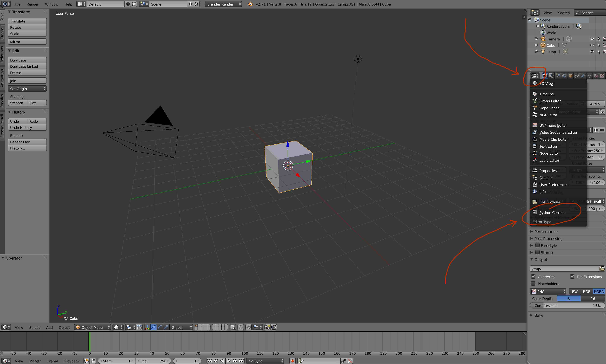

I've always wanted to play with 3d images and it now turns out that Blender has a python console that will help you do just that (thanks EuroPython 2014). Blender is an open source 3d editing tool with a sizeable community. It does lack beginner code tutorials with simple examples. Most tutorials are focussed on using the tool by hand because in the end, I imagine that that is how the tool will be used most of the time. My interests are to generate visualisations only based on data and code so in this document I will share some simple, albeit a bit verbose, python code to generate cubes with blender. To keep things simple I will only use cubes. Hopefully this will help get people started with the joy of 3d images.
When you open up blender you can access a python console by clicking on the change editor button and then selecting the python console.
This python console runs python3 and you can veryify that basic python commands work as you would expect. This means that we can define anything function in python here and it would run. We also have access to everything that blender can do through python commands.
Define the following function;
def delete_all():
bpy.ops.object.select_all(action='SELECT')
bpy.ops.object.delete(use_global=True)
This function will select everything in the scene and then delete everything that is selected. Now everytime you create something you can run delete_all() to remove it. After using this function in the console you should now see an empty scene.
The rest of the document will be python scripts to generate cubes. To show the resulting 3d image I will be using Sketchfab to show what the resulting 3d shape should look like in your blender view. For all of these examples, try to understand how and why the code makes the hape you see as an exercize.
In blender a cube has a location which represents the center of the cube and a radius which describes how large the square is.
bpy.ops.mesh.primitive_cube_add(radius=1, location = (0,0,0))
Smallcube by cantdutchthis on Sketchfab
We can create many cubes in a regular pattern.
numcubes = 6
rcubes = 0.3
for x in range(numcubes):
for y in range(numcubes):
for z in range(numcubes):
bpy.ops.mesh.primitive_cube_add(
radius=rcubes, location = (x,y,z)
)
1000cubes by cantdutchthis on Sketchfab
Note that the radius doubles the size of an arc of a cube. So doubling the radius increase the volume of the cube by a factor of eight.
bpy.ops.mesh.primitive_cube_add(radius=4, location = (0,0,0))
bpy.ops.mesh.primitive_cube_add(radius=3, location = (10,0,0))
bpy.ops.mesh.primitive_cube_add(radius=2, location = (20,0,0))
bpy.ops.mesh.primitive_cube_add(radius=1, location = (30,0,0))
Fourcubes by cantdutchthis on Sketchfab
import math
def f(x,y):
return -(y/5.0)**5 + (x/5.0)**5
numcubes = 8
for x in range(-numcubes,numcubes):
for y in range(-numcubes,numcubes):
bpy.ops.mesh.primitive_cube_add(
radius=0.2, location = (x,y,f(x,y))
)
Func1 by cantdutchthis on Sketchfab
import math
def f(x,y):
return 5*sin(x/15.0*math.pi) + 5*cos(y/15.0*math.pi)
numcubes = 8
for x in range(-numcubes,numcubes):
for y in range(-numcubes,numcubes):
bpy.ops.mesh.primitive_cube_add(
radius=0.2, location = (x,y,f(x,y))
)
Func1 by cantdutchthis on Sketchfab
import math
def f(x,y):
return 5*sin(x/15.0*math.pi)/(y+0.5) + 5*cos(y/15.0*math.pi)/(x+0.5)
for x in range(15):
for y in range(30):
bpy.ops.mesh.primitive_cube_add(
radius=0.2, location = (x,y,f(x,y))
)
This is my favorite. It shows you how you can make fractal like 3d constructs with only a few lines of code.
def new_cube(old_loc, direction, rad, dimmer):
res = []
for i in [0,1,2]:
res.append(old_loc[i] + direction[i]*dimmer + 2 * direction[i]*rad )
return [rad*dimmer,res]
def rec(cube, depth):
if depth == 4 :
return None
else:
bpy.ops.mesh.primitive_cube_add(
radius=cube[0], location = cube[1]
)
print(cube)
rec( new_cube(cube[1],(1,0,0),cube[0],0.4) , depth + 1 )
rec( new_cube(cube[1],(0,1,0),cube[0],0.4) , depth + 1 )
rec( new_cube(cube[1],(0,0,1),cube[0],0.4) , depth + 1 )
rec( new_cube(cube[1],(-1,0,0),cube[0],0.4) , depth + 1 )
rec( new_cube(cube[1],(0,-1,0),cube[0],0.4) , depth + 1 )
rec( new_cube(cube[1],(0,0,-1),cube[0],0.4) , depth + 1 )
rec([1,(0,0,0)],0)
Recursion1 by cantdutchthis on Sketchfab
This one is very similar but it puts all the generated cubes on the same plane. Check the coordinate-vector to see how I am on the same plane but I am placing the cubes in different directions.
def new_cube(old_loc, direction, rad, dimmer):
res = []
for i in [0,1,2]:
res.append(old_loc[i] + direction[i]*dimmer + 2 * direction[i]*rad )
return [rad*dimmer,res]
def rec(cube, depth):
if depth == 4 :
return None
else:
bpy.ops.mesh.primitive_cube_add(
radius=cube[0], location = cube[1]
)
print(cube)
rec( new_cube(cube[1],(1,0,1),cube[0],0.4) , depth + 1 )
rec( new_cube(cube[1],(-1,0,-1),cube[0],0.4) , depth + 1 )
rec( new_cube(cube[1],(1,0,1),cube[0],0.4) , depth + 1 )
rec( new_cube(cube[1],(-1,0,-1),cube[0],0.4) , depth + 1 )
rec( new_cube(cube[1],(0,1,1),cube[0],0.4) , depth + 1 )
rec( new_cube(cube[1],(0,-1,-1),cube[0],0.4) , depth + 1 )
Recursion2 by cantdutchthis on Sketchfab
We can simulate a random path that an ant might walk underground. We sample a new cube based on the location of it's previous cube to get a 3d random path. Note that for this to work we need to keep in mind the radius of the previous cube and the new cube.
def randdir():
choices = [(1,0,0),(0,1,0),(0,0,1),(-1,0,0),(0,-1,0),(0,0,-1)]
return random.choice(choices)
def new_cube(old_loc, direction):
res = []
for i in [0,1,2]:
res.append(old_loc[i] + direction[i])
return tuple(res)
cube = (0,0,0)
for i in range(500):
cube = new_cube(cube,randdir())
bpy.ops.mesh.primitive_cube_add(radius=0.5, location = cube)
Ants by cantdutchthis on Sketchfab
The downside of blender is that there is no native support for numpy and friends. We won't worry too much about this for now and will write some slightly more verbose python to show how you can use cubes to show a distribution as well.
import random
def r():
return round(random.gauss(0,6))
def bins(s):
minx = min([ i[0] for i in s ])
maxx = max([ i[0] for i in s ])
miny = min([ i[1] for i in s ])
maxy = max([ i[1] for i in s ])
res = {}
for x in range(minx, maxx+1):
xdict = {}
for y in range(miny, maxy+1):
xdict[y] = sum([ 1 for c in s if c[0] == x and c[1] == y ])
res[x] = xdict
return res
bind = bins([ [r(),r()] for i in range(6000) ])
for x in bind.keys():
for y in bind[x].keys():
h = bind[x][y]
if h != 0:
bpy.ops.mesh.primitive_cube_add(
radius=0.5, location = (x,y,h)
)
Normdist by cantdutchthis on Sketchfab